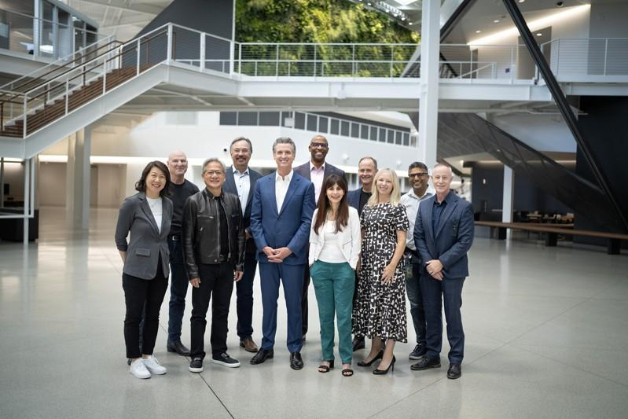

加州政府和辉达（NVIDIA）公司启动了一项新计划，合作开展尖端人工智能（AI） 项目，并为学生、教育工作者和员工提供前所未有的变革性技术的机会。该项目扩展人工智能工具和资源，帮助学生、教育工作者和工人（尤其社区大学学生）学习新技能并提升职业生涯。
该合作协议由州长纽森（Gavin Newsom）和辉达创始人兼首席首席执行官黄仁勋（Jensen Huang）签署，旨在培训学生、教育工作者和工人，支持创造就业并促进创新，利用人工智能解决挑战，改善加州人的生活。
此外，将辉达的新人工智能资源引入社区大学，包括课程和认证、硬件和软件、AI 实验室和研讨会等，为学生、教育工作者和工人学习新技能和为他们的职业生涯开辟新途径。
纽森州长指出，「加州的世界领先公司正在引领人工智能突破，我们必须为加州人创造更多机会来获得利用这项技能并推动他们的职业发展。我们正在与辉达合作，将 AI 工具直接连接到学生、教育工作者和工人，打造一条推动未来创新的管道。
这项创举是在纽森州长的行政命令的基础上提出的，呼吁利用人工智能为加州人民提供最好的服务。今年加州已推出了公务员培训计划，举办了GenAI（生成式人工智能）峰会，发布了用于政府采购的 GenAI 工具包，启动了试点项目以探索 GenAI 如何帮助解决交通拥堵和语言无障碍等挑战。
辉达创办人兼首席执行官黄仁勋指出，「我们正处于新工业革命的早期阶段，这场革命将改变全球价值数兆美元的产业。辉达将与加州一起培训 10万名学生、大学教师、开发人员和数据科学家，以利用这项技术帮助加州为未来的挑战做好准备，并实现全州的繁荣。」
加州社区大学总校长克里斯蒂安 （Sonya Christian）指出，「这种合作关系将帮助加州社区大学及其超过 200 万名学生掌握与行业一致的人工智能技能，并在第一天就为推动加州的繁荣和参与经济竞争力的职业做好准备。随着人工智能改变学习的未来，我们不能停滞不前，我们的方法优先考虑公平地获得人工智能教学和学习增强功能，提高服务不足的人群的水平。」
由加州州长纽森、辉达创办人兼首席执行官黄仁勋、加州社区大学总校长克里斯蒂安共同签署的该项协议，其要点包括：
利用人工智能发展经济并创造就业机会
辉达提供技术指导、指导以及先进的人工智能硬件和软件资源，以支持尖端研究计划。加州将探索支持早期人工智能新创企业和公私合作伙伴关系的机会，以创建人工智能创新区和就业创造中心。辉达致力于探索黑客松（hackathons）或设计冲刺，展示人工智能在加州的实际应用。
为学生、教育工作者和工人提供培训
加州和辉达计划合作在高等教育设施中创建人工智能实验室，以满足人工智能教育和研究不断变化的需求。加州将资助跨教育机构和行业的人工智能工作者培训计划，并与辉达合作开发教师项目，以提高人工智能素养和课程设置。而辉达的目标是为 AI 人才创建管道和学习路径，并为特定领域的 AI 提供行业认可的认证，包括教师的培训师培训计划。加州公务员职业采用新技能和培训，包括人工智能专家在政府中的新角色。
促进全州创新和实际应用
辉达和加州将支持利用人工智能技术应对当地挑战的措施，包括为学生提供参与现实世界人工智能计划的机会。辉达将协助用户取得尖端的 AI 硬件、软件和云端运算资源，以用于教育和研究计划。
与社区大学系统直接合作
将人工智能概念融入课程中，让学生学习如何使用人工智能应用程序来帮助他们在高需求行业找到工作。组织与当地需求职位相关的人工智能研讨会和训练营，并与地区雇主合作，创建一支需求旺盛的熟练劳力队伍。
确定人工智能大使计划和教师发展项目的教职员，在各大学扩展人工智能证书项目，以满足当地雇主的需求。
在9日公布这项消息之后，加州发出行动呼吁，鼓励其他人工智能和技术利益相关者加入未来的合作伙伴关系，以确保加州继续成为教育、创新、研究以及为当下和未来的劳动力做好准备方面的全球领导者。世界一流的加州大学（UC）和加州州立大学（CSU）系统也将在未来与州政府合作进行这项工作。